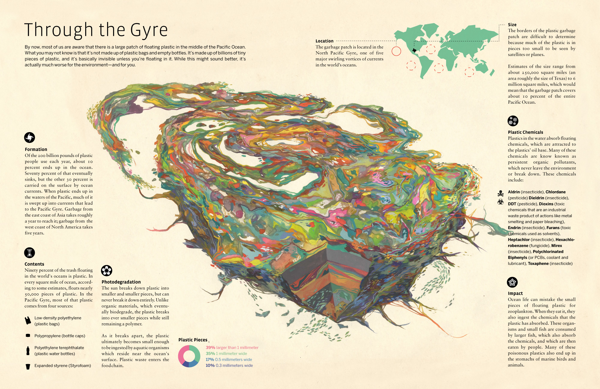
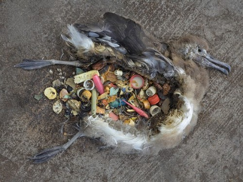
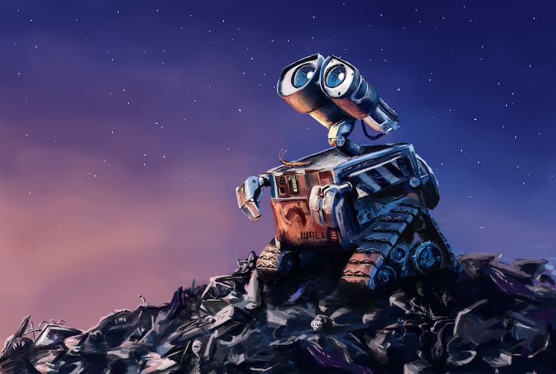

The Great Pacific Garbage Patch
There exists, in the Pacific Ocean, a "patch" or grabage roughly the size of Texas. Though the size is heavily debated due to one key factor. It's not the patch of garbage that you are probably thinking. The garbage is a vast amount of microplastics floating just under the surface of the water. You might be thinking that it's visible from outer space and that if you were to pass by in a boat, you would see a bunch of plastic bottles and yogurt containers bobbing in the water. It's so much worse than that. These microplastics get eaten by plankton and other small sea creatures, which in turn get eaten by larger animals. The plastics trickle up through the food chain poisioning everything.

Animal Fatalities
Some trash that manages to get deposited into the ocean doesn't biodegrade fast enough. Currents carry the rubbish across the waters and eventually it washes up on shores. Birds often eat the trash, usually plastic, thinking it's some kind of food. They can't properly digest the garbage resulting in their untimely deaths. This is a serious problem that humans as a species are directly responsible for. No other animal on this planet produces plastic waste. We need to take steps and do what we can to make sure plastics stay out of landfills, oceans, streets, and parks.

Landfills
Landfills are places we dump trash. The trash just sits there, festering. The reason this is bad is that as everything ever so slowly biodegrades, it releases countless chemicals into the air and into the ground. The chemicals seep down into underground fresh water sources. We do take measures to ensure we place these landfills away from these water sources, but nonetheless, we are poisoning the earth. In a few generaritons, Disney's Wall-E could actually happen in real life.